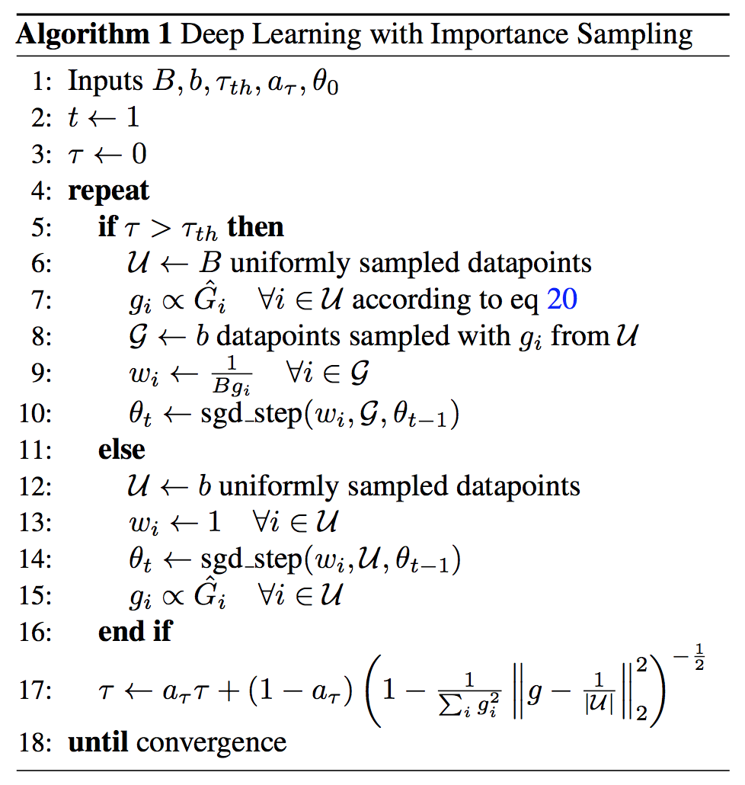
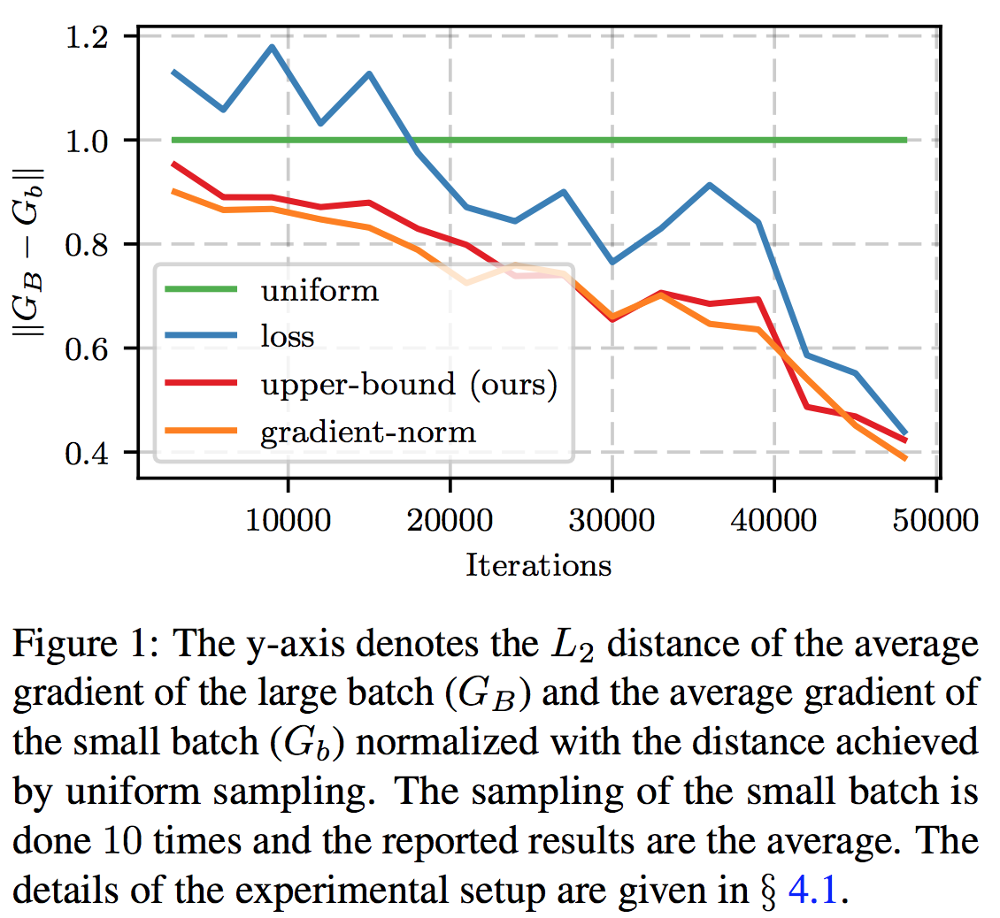
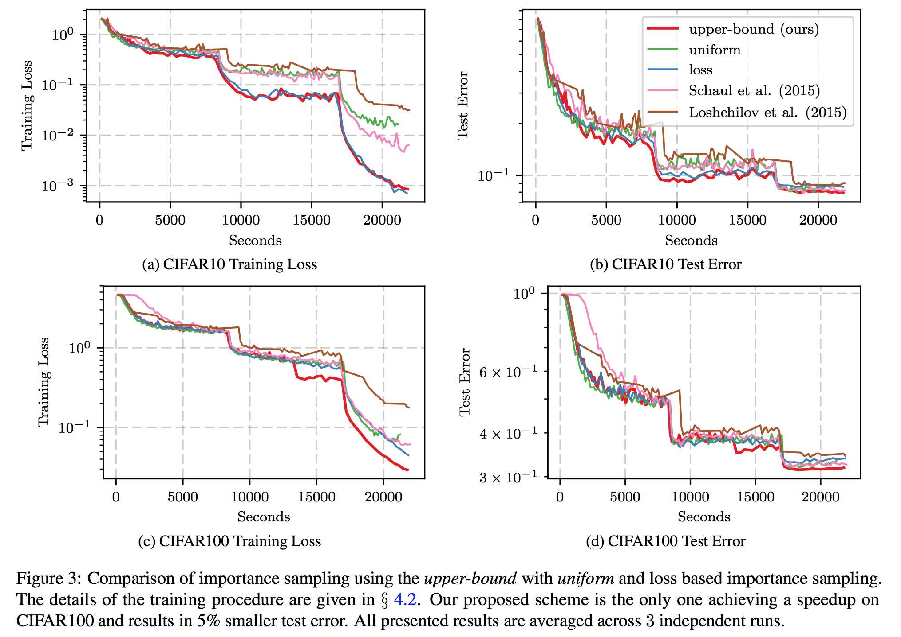
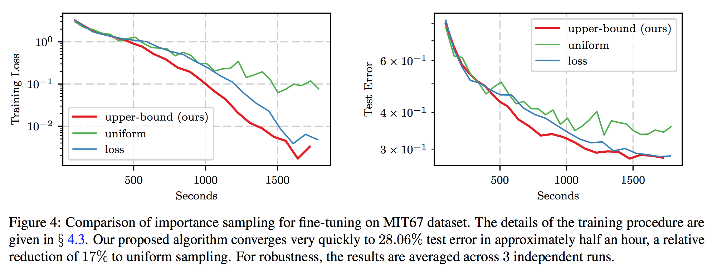
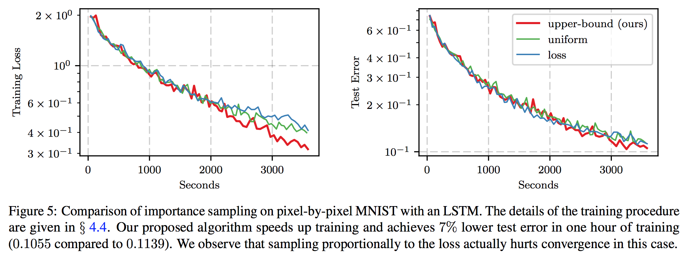
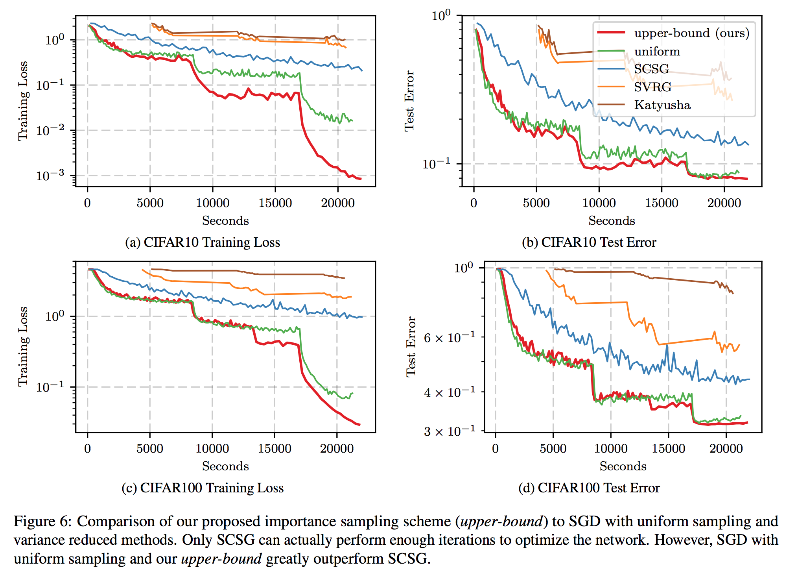

Not All Samples Are Created Equal: Deep Learning with Importance Sampling
Мотивация
В машинном обучении некоторые обучающие примеры проще других, и довольно быстро они становятся бесполезны для обучения: модель и так выдаёт достаточно уверенные предсказания на них. Можем ли мы как-то тратить меньше времени на простые примеры и сконцентрироваться на сложных? Оказывается, если мы делаем стохастическую оптимизацию, то можно семплировать обучающие примеры не равномерно из всего датасета, а следуя какому-то хитрому распределению, а потом делать importance-sampling коррекцию.
Описание модели
Итак, мы хотим обучить некоторую нейросеть \(\Psi(\cdot, \Theta)\) на датасете \(\mathcal{X} = \{(x_i, y_i)\}_{i=1}^N\), пользуясь функцией потерь \(\mathcal{L}(y_\text{pred}, y_\text{true})\)
\[ \mathbb{E}_{(x, y) \sim U(\mathcal{X})} \mathcal{L}(\Psi(x, \Theta), y) \to \min_\Theta \]
Стохастические градиенты в такой модели
\[ G(\Theta) = \nabla_\Theta \mathcal{L}(\Psi(x_i, \Theta), y_i), \quad\quad i \sim U(|\mathcal{X}|) \]
Введём предлагающее распределение \(Q(\mathcal{X})\) и сделаем коррекцию на выборку по значимости:
\[ G(\Theta) = w_i \nabla_\Theta \mathcal{L}(\Psi(x_i, \Theta), y_i), \quad\quad i \sim Q(|\mathcal{X}|) \]
где \(w_i = \tfrac{1}{|\mathcal{X}| Q(i)}\) – обычная поправка для выборки по значимости.
Как выбрать хорошее распределение \(Q\)? Утверждается, что оптимальным (для уменьшения дисперсии градиента 1) распределением будет пропорциональное норме градиента для соответствующего индекса
\[Q^*(i) \propto \|\nabla_{\Theta} \mathcal{L}(\Psi(x_i, \Theta), y_i)\|\]
Однако, чтобы найти такое распределение в нейросети придётся сделать обратных проход каждого примера из обучающей выборки, т.е. одну полную эпоху (без апдейтов) только для того, чтобы понять, что семплировать! That’s not gonna work.
Ускоряемся раз
Поэтому вместо честной нормы авторы вводят верхнюю оценку на норму и сводят вопрос к норме градиента функции потерь по преактивациям выходов, мотивируя это тем, что благодаря батчнорму и друзьям именно эта штука варьируется значимее всего.
\[ \| \nabla_\Theta \mathcal{L}(\Psi(x_i; \Theta), y_i) \|_2 \le L \rho \left\| \Sigma'(z_i^{(L)}) \nabla_{h_i^{(L)}} \mathcal{L}(\Psi(x_i; \Theta), y_i) \right\|_2 \]
где \(L\) – номер последнего слоя, \(z_i^{(L)}\) – его преактивации, \(h_i^{(L)}\) – постактивации, а \(\Sigma'(x)\) – диагональная матрица с производной итоговой функции активации \(\sigma_L\) на главной диагонали, \(\Sigma'(x) = \text{diag}(\sigma_L'(x))\)
Окей, теперь нам не нужен обратный проход, но полный прямой проход для всего датасета всё ещё остался.
Ускоряемся два
Избавиться от него вряд ли удастся, поэтому тут авторы предлагают делать это не для всего датасета. А именно:
- Взять случайный большой батч B.
- Посчитать \(Q\) на этом батче.
- Семплируем (с возвращением) из этого батча по распределению \(Q\) маленький батч b для обучения.
Дальше авторы выводят формулу для изменения общей дисперсии градиента при замене равномерного семплирования из B на \(Q\), но говорят, что ей пользоваться не очень удобно, ибо это какое-то \(L_2\) расстояние в квадрате, для него сложно ввести гиперпараметр-порог, чтобы понимать, когда пользоваться альтернативной схемой. Другое дело – посмотреть, насколько дисперсия уменьшилась относительно исходной (при равномерном семплировании) и какому увеличению батча это эквивалентно.
Правда, в процессе авторы делают аж две ошибки: делят не на исходную дисперсию, а на исходный второй момент, а так же почему-то считают, что при увеличении размера выборки в \(\tau\) раз дисперсия Монте Карло оценки уменьшится в \(\tau^2\) раз (а на самом деле в \(\tau\) раз, если для вас это не супер-очевидно, немедленно проделайте упражнение по выводу этого результата).
В итоге авторы говорят, что уменьшение дисперсии эквивалентно увеличению батча в \(\tau\) раз и
\[ \frac{1}{\tau} = \sqrt{1 - \frac{\|g - u\|^2}{\|g\|^2}} \]
Где \(g\) и \(u\) – распределение примерах из батча \(B\), \(u\) – равномерное, а \(g\) – распределение для выборки по значимости, т.е. \(g_i \propto \|\nabla_{\Theta} \mathcal{L}(\Psi(x_i, \Theta), y_i)\|\) (как \(Q^*(i)\), только с ограничением носителя на семплы из \(B\)).
Но на самом деле формула должна быть такой 2
\[ \frac{1}{\tau} = 1 - \frac{\|g - u\|^2}{\|g\|^2 - \frac{1}{B} \left(\frac{\left\|\sum_i G_i\right\|}{\sum_i \|G_i\|}\right)^2} = 1 - \frac{\|g - u\|^2}{\|g\|^2 \left(1 - \frac{1}{B} \frac{\left\|\sum_i G_i\right\|^2}{\sum_i \|G_i\|^2}\right)} \]
Получается, что предложенной схемой мы можем как бы увеличить эффективный размер батча в \(\tau\) раз. Когда такое полезно? Когда мы на это потратим меньше вычислений, чем на обработку \(\tau\)-кратного батча. А именно, в предложенной схеме нам нужно сделать один прямой проход по всем примерам из \(B\) (чтобы посчитать предложенное распределение \(g\)), а потом прямой и обратный для каждого примера из маленького батча \(b\). В предположении, что обратный проход в два раза дороже прямого получаем, что такая штука стоила бы нам \(B + 3b\) операций, в то время как обычная обработка \(\tau\)-кратного батча стоила бы \(3b \tau\) операций. Соответственно, пользоваться предложенным методом разумно, когда \(B + 3b < 3b \tau\), т.е. \(\tau > 1 + \tfrac{B}{3b}\). 3
Итого, в предложенном методе мы ведём оптимизацию как обычно, равномерно семплируя обучающие примеры, но с каждым батчом обновляем нашу \(\tau\) как экспоненциальное скользящее среднее. Как только \(\tau\) становится меньше порога, равномерно семплируем примеры из \(B\) с последующий ресемплированием по значимости в \(b\).

Эксперименты
Для начала авторы показывают, что их метод уменьшает расстояние между средним градиентом по большому батчу и средним градиентом по маленькому батчу. Здесь loss – это метод, выбирающий примеры на основе значений функции потерь, а gradient-norm – это полный градиент без приближений верхней оценкой.

Потом они сравниваются с другими методами в терминах графика ошибки. Вроде как предложенный метод всегда ниже остальных

Их метод помогает fine-tuning’у

Но вот на т.н. permuted mnist (взяли mnist, перемешали все пиксели зафиксированной перестановкой, подаём пиксель-за-пикселем в LSTM’ку) 
И сравнились (Appendix.C) с другими методами уменьшения дисперсии в стох. оптимизации

Заключение
Очень интересная идея, неплохие результаты, но большой косяк с формулой для \(\tau\). Возможно, после их исправления будет ещё лучше.
Неочевидно, разумная ли это идея in the first place. При оптимальном предложном распределении (по крайней мере в одномерном случае) дисперсия становится нулевой, а нам вроде как шум помогает нейросети обучать.↩
Внимание! Я, конечно, подумал над формулой, когда её выводил, но голову на отсечение за её корректность не дам! Лучше выведите сами.↩
В статье авторы говорят, что экспериментально показывают, что и \(\tau\) меньше этого порога работают. Интересно, не оттого ли, что они неправильно считают \(\tau\)?↩